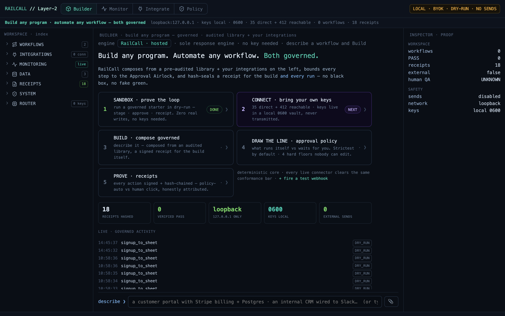
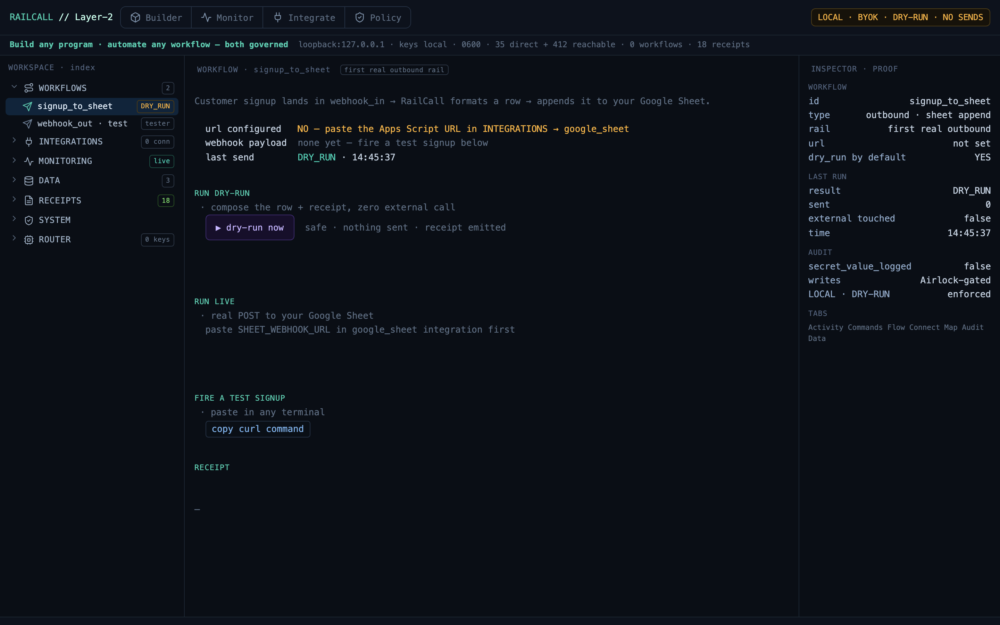
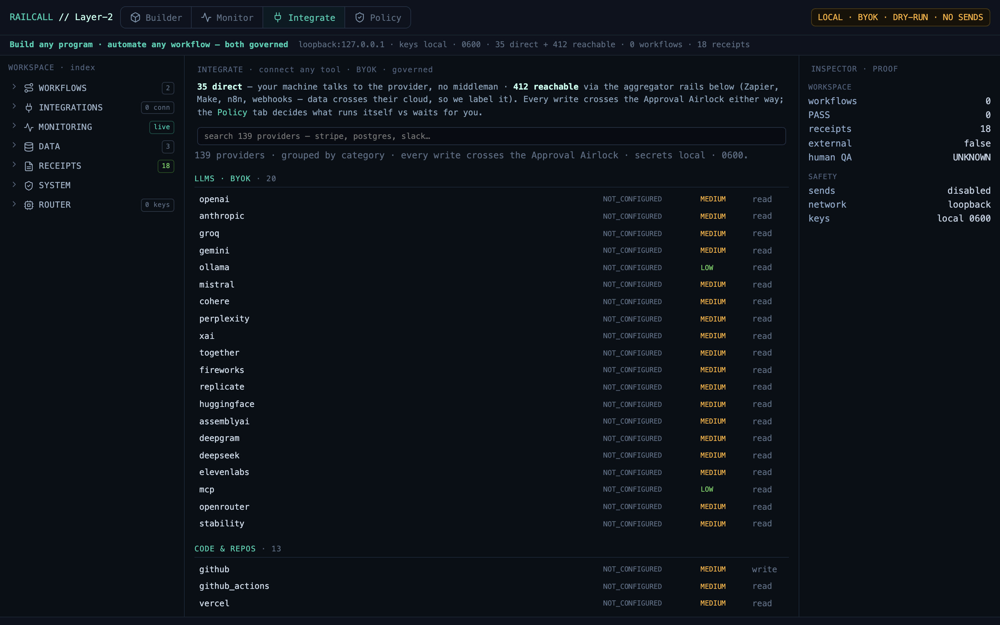
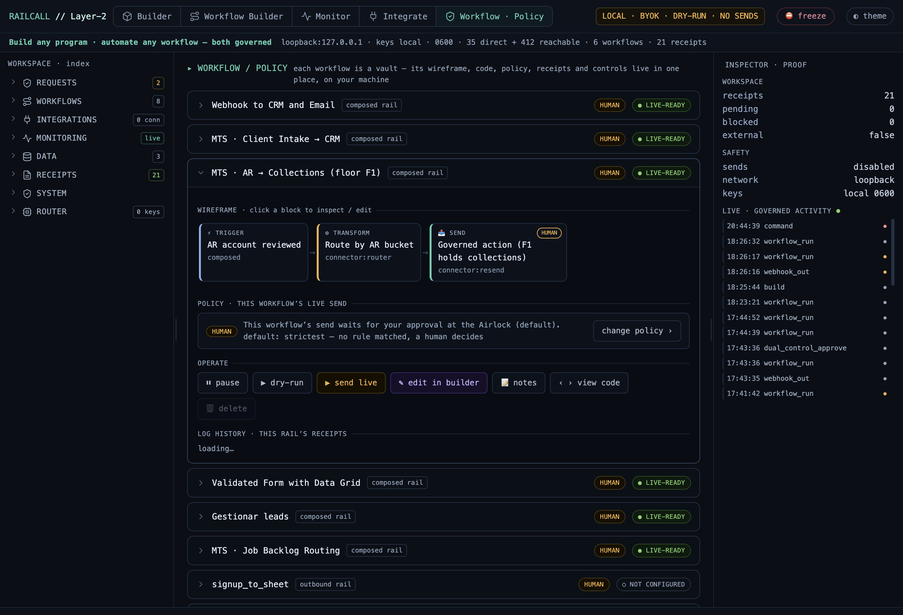
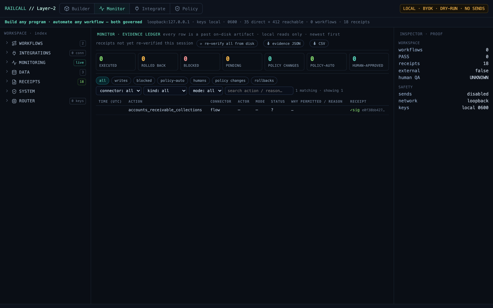
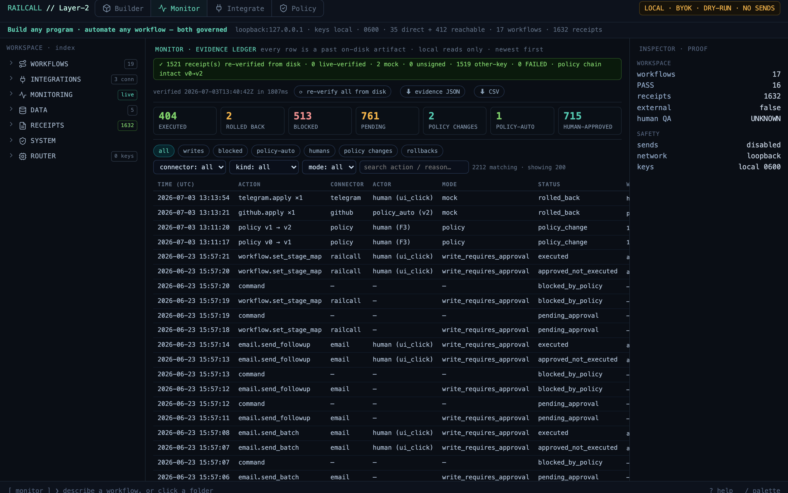

RailCall System Architecture & Developer Manual
A local-first Layer-2 Terminal for building, auditing, and organizing developer workflows.
RailCall Studio runs on your machine. The terminal stays the source of truth, while Studio organizes sessions, folders, workflows, integrations, artifacts, generated links, and audit receipts around it.
curl -fsSL https://railcall.ai/install.sh | bash
railcall studio/v2 Studio, taken with zero external sockets. Blocks tagged Example show illustrative output, not live data. Where a flow is forward-looking (webhook tunnels, CLI billing) it is marked as such. RailCall runs in dry-run / proof-only mode today — no live sends or charges.1 · What is RailCall?
RailCall is a local developer kit and Layer-2 Terminal. It is not a cloud IDE and not a fake dashboard. Describe what you want in plain English and the Builder composes it — full programs, internal tools and their UIs, and multi-step workflows — strictly from an audited library plus your integrations, with a signed receipt for the build itself. The generated interface is yours: plain files on your disk you can restyle, extend, or point any model at (see Your UI Is Yours). The Studio organizes the real terminal, local files, workflows, API integrations, audit receipts, and generated artifacts.
| Layer | Role |
|---|---|
| Terminal | source of truth — real commands, real output |
| Local folder | source of truth — your files on your SSD |
| Studio | organization layer over the terminal |
| Receipts | proof layer — evidence for every claim |
| BYOK | integration layer — your keys, local |
2 · Quickstart
# 1 · install the CLI + Studio (offline, ~6 MB) — login · balance · audit · verify · build · studio curl -fsSL https://railcall.ai/install.sh | bash # 2 · authenticate + check balance railcall login <YOUR_API_KEY> railcall balance # 3 · audit a file locally — zero-retention, nothing leaves your machine, signed receipt on disk # (make a tiny sample so the very first run can't fail) printf 'name,email\nAda,ada@example.com\nGrace,grace@example\n' > sample.csv railcall audit sample.csv # 4 · verify that receipt yourself — offline, no network, no trust required railcall verify # re-checks what audit just minted; a tampered receipt FAILS the signature # 5 · open RailCall Studio (the visual builder): railcall studio # boots Studio on 127.0.0.1:8799
Expected result: a local browser tab opens at http://127.0.0.1:<port> (default 8799).
Studio is launched from the terminal but viewed in the browser — a real interface without turning RailCall into a heavy desktop app.
No model key needed. The Builder's describe→build chat runs on the hosted engine by default — your railcall login account authenticates it and each call books one governed flow (free accounts include 100). Prefer fully local? Paste your own model key in Connect and it wins over the hosted default.
Your customer portal lives at railcall.ai/dashboard — your API key, flows used/remaining, balance & top-up, team, and billing. Signing up on the site drops you there automatically.
Updating: re-run the install command above — it refreshes the Studio in place (your workspace, keys, and receipts are kept). If a running Studio still shows the old interface, quit it first: kill $(lsof -tnP -iTCP:8799 -sTCP:LISTEN) — old code stays resident until the process restarts.
3 · System Architecture
The lifecycle from signup to a running cockpit:
railcall studioWebhook ingestion path
4 · Studio Interface
Launching Studio opens http://127.0.0.1:8799/v2 — three panes around a governed composer. The status bar never lies: every screen locks LOCAL · BYOK · DRY-RUN · NO SENDS until you explicitly approve a live action.

Left · Workspace index
Workflows, integrations, monitoring, data, receipts, system, router — the real state of your machine, not a mockup.
Center · Governed composer
Describe a program in plain language; RailCall composes it from a pre-audited library and streams a governed build log. The activity ledger underneath shows every real event.
Right · Inspector · Proof
Live counts, PASS state, receipts, external, human-QA, sends (disabled), network (loopback), keys (local · 0600).
Modes
Builder composes programs, workflows & UIs — describe it in plain English; the hosted engine answers by default (no model key needed, one governed flow per call; paste your own key in Connect to stay fully local) · Monitor is the Evidence Ledger — every action attributed + re-verifiable from disk · Integrate manages your BYOK connections (35 direct + 412 reachable) · Policy is where you draw the line between automatic and manual.
Open any workflow and the Inspector proves how it will behave before it runs — dry-run by default, external writes Airlock-gated, secrets never logged:

5 · Workflows
The build loop:
Describe → Compose → Build → Audit → Receipt → Artifact
Example Example — you say: "A lead comes in and routes to 5 employees for call/email follow-up over 2 weeks." RailCall produces a workflow spec, mapped audited pieces, needs-audit gaps, a visual artifact, a receipt, and an audit status.
Status meanings
| Status | Meaning |
|---|---|
| PASS | All required steps mapped to audited pieces and verified. |
| PARTIAL | Some pieces verified, but one or more steps need audit or custom implementation. |
| FAIL | The workflow failed validation or audit. |
| UNKNOWN | The check has not run yet. Honest — not a pass, not a fail. |
| NEEDS HUMAN QA | Automated checks passed, but a person still needs to test the customer journey. |
6 · Real Multi-Connector Workflows
This is what the rail is for. A workflow is a chain of connectors — data is read out of one system, handed to the next, and dropped. Every hop crosses the Approval Airlock and appends a receipt. RailCall orchestrates across the systems you already run (and even the automation tools you already have — n8n, Make, Zapier are connectors too) without becoming the place your data lives.
Every → is an Approval Airlock gate; every hop emits a receipt.
- An issue is labeled
sev1. Your tunnel forwards the webhook to/api/webhook/github_sev1; RailCall sanitizes and logs it. - RailCall opens or updates a Salesforce Case on the affected account — with your Salesforce key, from your machine.
- It triggers your existing n8n ops pipeline by its webhook, passing the case id — RailCall governs n8n rather than replacing it.
- It posts to the incident channel in Microsoft Teams and opens a Planner task for the owner.
- It places a Twilio voice call to the on-call engineer, reading out the case id and severity.
workflow_id, the five hops, each Airlock approval, external_sockets, integrity_root. Not the issue text, the account record, or the phone number. Those passed through.- Stripe posts
charge.failedto your webhook slot; the payload is sanitized into your local inbox. - RailCall flags the account at-risk in HubSpot and reads the amount + customer ref straight through.
- It sends a templated dunning email via SendGrid and a polite Twilio SMS — each a separate Airlock approval.
- It opens a Salesforce task for the account owner to close the loop.
accounts_receivable_collections receipt — proof each step ran, license-clean, zero external sockets. The card, the email body, the phone number: passed through, never parked.- A lead hits your webhook slot. RailCall upserts it into Salesforce and dedupes on email.
- Your existing n8n enrichment flow scores it; RailCall hands the record over and reads the score back.
- It alerts Slack
#saleswith the score and, if hot, places a Twilio call connecting the assigned AE to the lead.
- A PR merges to
main. RailCall closes the linked Linear issue and pulls the title + author. - It notifies the release channel in Microsoft Teams and appends a dated entry to your Notion changelog.
To build your own, just describe it in the composer — "when a GitHub issue is labeled sev1, open a Salesforce case, run my n8n pipeline, post to Teams, and call the on-call engineer." RailCall maps each step to an audited connector, flags any gap as NEEDS AUDIT, and hands you a receipt. No step is ever silently faked.
7 · Governed Pass-Through — We Never Hold Your Data
This is the whole point. A cloud automation SaaS (Zapier, Make, n8n-cloud) sits between your systems — your customer records, payment events, and OAuth tokens land in their database. RailCall runs on your machine and is a rail, not a store: data is read from one connector, handed to the next, and dropped. The only thing that persists is the proof it happened.
| Passes through — RailCall never stores it | Persists locally — governance only |
|---|---|
| Customer records, PII, payment events, ticket bodies, phone numbers, message contents | The workflow spec — what the rail does |
Provider keys & OAuth tokens — held in your 0600 vault, used in-process, never transmitted to us | The audit receipt — hashes, Airlock approvals, external_sockets, integrity_root |
| The composed payloads handed to your connectors | A sanitized webhook inbox you own under .railcall_workspace/ |
0600 vault, runs bind to 127.0.0.1, sends are dry-run + Airlock-gated. Every screenshot in this manual was captured with external_sockets: 0 — measured by an lsof sweep, not asserted.Because the rail holds nothing, there is nothing on our side to breach, subpoena, or leak. Your data residency is wherever your machine and your connectors already are.
8 · Integrations / BYOK
RailCall reaches your tools through a small API / adapter stack (REST, Webhook, SQL, Email/SMTP, OAuth, plus MCP) — every integration is a config row on that stack, not bespoke code. You bring your own keys. Keys stay local — written to a 0600 vault, masked, never transmitted.
Categories: LLMs · Code & Repos · Cloud & Deploy · Databases · Payments · Comms · Docs & Workspace · Monitoring · Search & Memory · Browser Automation · Artifact Storage · CI/CD · Secrets · Analytics · Support / CRM · Automation.

Connect a tool — the flow
- Open Integrate and search the 135 reachable connections —
stripe,salesforce,twilio,n8n,github… - Paste your key. It's written straight to the
0600vault, masked in the UI, and never transmitted to us. - RailCall runs a real local connection test against the provider. Only a passing probe flips the slot to connected — no green without evidence.
- The connector is now available to every workflow, used in-process from your machine, under the Approval Airlock.
9 · Webhook System
The native ingestion endpoint accepts small webhook payloads, writes them to a local inbox, and appends an audit event. It does not execute untrusted code during ingestion.
| Property | Value |
|---|---|
| endpoint | POST http://127.0.0.1:<port>/api/webhook/<slot_id> |
| max payload | 64 KB |
| execution on ingest | none |
| storage | local inbox file |
| audit | append-only event |
For Stripe, GitHub, Shopify, Slack, etc., point the third party at your tunnel URL, not 127.0.0.1 directly:
https://your-tunnel.ngrok.app/api/webhook/stripe_payment_slot ↓ forwards to http://127.0.0.1:8799/api/webhook/stripe_payment_slot
curl -X POST http://127.0.0.1:8799/api/webhook/stripe_payment_slot \ -H "Content-Type: application/json" \ -d '{"id":"evt_test_123","type":"charge.succeeded","amount":5000}'
Expected response Example
{ "status": "SUCCESS", "message": "Ingested into loopback inbox" }10 · Approval Policy — You Draw the Line
The Policy tab is where you decide what runs itself and what waits for a human. The engine holds the line you draw, and every change to that line is signed.

Four hard floors nobody can edit — not you, not an admin, not an agent:
| Floor | Rule |
|---|---|
| F1 | Irreversible actions always stop for a human. Messages, emails, anything a customer sees — no rule can auto-fire what can't be taken back. |
| F2 | Unclassified actions always stop for a human. Unclassified means untrusted. |
| F3 | Policy changes always stop for a human. The policy can never authorize its own widening. |
| F4 | A $-capped rule with an unpriced action stops for a human. If it can't be priced, a cap can't clear it. |
Every connector action is classified by reversibility: reversible (the prior value can be restored) · compensable (a counter-action neutralizes it — delete, close, refund) · irreversible (a human saw it — floor F1, never automatic). Above the floors, you write plain-language rules: auto-approve reversible on airtable, auto-approve compensable on github up to $50, block stripe.create_refund outright.
Changing the policy goes through the same airlock as any write. You stage the change; RailCall computes a signed WIDENS/TIGHTENS diff plus a blast-radius simulation (every action, decided by the real engine, before anything is live); then you approve. One click stages revert to strictest — the kill-switch drill. Every version is Ed25519-signed and hash-chained to the one before it.
11 · Audit Receipts & the Evidence Ledger
RailCall does not call something green unless there is evidence. Every audited flow emits a receipt:

{
"result": "PASS",
"license_clean": true,
"external_sockets": 0,
"integrity_root": "sha256:39bf8abe…582a07b",
"artifact_path": "builds/accounts_receivable_collections.html",
"workflow_id": "accounts_receivable_collections",
"audited_pieces": 14, "needs_audit": 0,
"timestamp": "2026-06-21T13:31:41Z"
}| Field | Meaning |
|---|---|
| external_sockets: 0 | No unexpected external sockets were observed during the audited flow (measured by an lsof sweep, not asserted). |
| license_clean: true | The workflow used license-approved components only. |
| integrity_root | A sha256 hash representing the verified workflow / spec / artifact state. |
| human QA: UNKNOWN | A person has not completed the customer-facing QA path yet. |
Audit a flow yourself
Every proof is on local loopback — read it with the same endpoints Studio uses:
curl http://127.0.0.1:8799/api/receipts/list # every receipt curl http://127.0.0.1:8799/api/audit # latest build · external_sockets · integrity_root · human QA
- Confirm
external_socketsis 0 — measured by an lsof sweep, not asserted. - Recompute
integrity_rootagainst the spec + artifact to prove nothing drifted. - Watch the same events stream live in the Monitor tab as the Airlock approves each step.
The Evidence Ledger — the Monitor tab
The Monitor tab is an audit-grade ledger of everything that ran. Every row is a past on-disk artifact — receipts, policy changes, and the blocked / pending events too, because success-only logs are an auditor finding, not a feature.

- Attribution, first-class — who initiated, which principal executed (a human click or a named policy version), and why it was permitted — the exact rule or floor that decided.
- Re-verify all from disk — one click re-audits every receipt from canonical bytes and walks the policy hash chain; a plain-language badge reports the result and names the first broken artifact if there ever is one. Nothing is trusted from memory.
- Drill-down — any row opens the full attribution, hashes, the raw signed receipt, and an independent verify of that one receipt.
- Evidence export — download the current filtered view as JSON or CSV; the JSON bundle carries its own verification summary, so a third party (or your auditor) can check the chain without trusting you.
12 · Local Files & Directory Map
.railcall_workspace/ workspace.json sessions.json workflows/ folder_notes.json generated_links.json integrations.json commands.json audit_log.jsonl webhook_inbox/ uploads/ keys.local.json
| Folder | Holds |
|---|---|
| builds/ | Generated HTML dashboards, workflow visuals, receipts, artifacts. |
| tests/ | Signed QA and airlock-proof receipts. |
| fixtures/ | Source data for workflows and test flows. |
| workbench/ | Studio kit and local UI / server files. |
| .railcall_workspace/ | The local workspace DB — sessions, workflows, BYOK vault (0600), integration metadata, audit log, webhook inbox. |
Folder notes let developers remember what each folder is for without digging through code or terminal history.
13 · Total Flexibility — APIs, MCPs & Custom UIs
Because RailCall treats the terminal and local files as the source of truth, you can drive the entire system programmatically — no Studio UI required.
Calling the raw local API
Pull your active usage or workspace state into your own script, scriptable widget, or terminal toolbar. Every metric is exposed on local loopback:
curl http://127.0.0.1:8799/api/usage # usage / balance — UNKNOWN when unverified, never faked curl http://127.0.0.1:8799/api/data # workflows + workspace state curl http://127.0.0.1:8799/api/receipts/list # every audit receipt
All read-only, all loopback-bound — the same endpoints Studio itself calls. Nothing leaves 127.0.0.1.
AI & MCP integration (Model Context Protocol)
If you use Anthropic, Claude Desktop, or a custom LLM setup, point your MCP server straight at your local .railcall_workspace/ directory.
- State context — your AI parses
audit_log.jsonlorworkspace.jsonto understand the project's real state instantly. - Smart actions — it reads the directory map to build or modify workflows from real, audited execution states.
- Flexible execution — work straight from the terminal, call your own APIs, plug in MCP tools, or build your own aesthetic wrapper. The product molds entirely to how the dev wants to work.
14 · Your UI Is Yours — Generating the Interface
RailCall does not design UIs, and that is deliberate. We ship the programmatic source of truth — the local API, the workspace files, the audited state — and stay out of your visual layer entirely. The terminal and .railcall_workspace/ are the canonical surface; everything rendered on top of them is yours to shape.
Hand the map to a model
Want a custom dashboard, a menu-bar widget, a web panel? Point your desired model — Claude, GPT, Cursor, your own local LLM — at the map and have it generate the interface from real state, calling it with your own key (BYOK). Your model, your key, your aesthetic; RailCall just hands over the source of truth. Go back and forth with it until the layout is right.
- Feed it the map — the
/api/*endpoints and.railcall_workspace/are a complete, honest description of your system. A model has everything it needs to render it. - Iterate — refine layout, framework, and aesthetic with the model. RailCall has no opinion on your stack.
- You own + debug it — the generated UI is your code, in your repo. Debugging the interface is a front-end task like any other: the developer's job, not ours.
Because the source of truth is programmatic and audited, any UI built on it is verifiable by construction — it can only show what the receipts already prove. We keep that core honest; you make it look like anything you want.
15 · Community — Build the Rail With Us
RailCall is built in the open with the developers who run it. Every connector on the rail started as someone's request — the roadmap is public, the audits are shared, and the fastest way to get a workflow, a connector, or a fix is to bring it to the community.
Propose connectors · request product improvements · share workflows and get them audited · trade governed rails with other devs · shape what ships next.
Join the RailCall Discord →Request a connector
Need a system the API stack doesn't reach yet? Ask. Requests are triaged in the open and prioritized by demand.
Ship a workflow
Post a rail you built. The community and the auditor stress-test it, and the good ones become shareable templates.
Product improvements
Found a rough edge or want a feature? File it in Discord — power-user feedback drives the roadmap directly.
Audited, not anecdotal
Bugs come with receipts and repro; fixes come with receipts and proof. The community runs on evidence, same as the product.
16 · Testing Manual
Step 1 — verify repo
git status git log -1 --oneline
Step 2 — start Studio
railcall studio # boots RailCall Studio on 127.0.0.1:8799 (port busy? STUDIO_PORT=8801 railcall studio)Step 3 — test the local webhook endpoint
curl -X POST http://127.0.0.1:8799/api/webhook/stripe_payment_slot \ -H "Content-Type: application/json" \ -d '{"id":"evt_test_123","type":"charge.succeeded","amount":5000}'
Step 4 — verify outputs
- Inbox counter increments
- Monitor feed shows the ingestion event
- Audit log receives the event
- Local inbox file contains the payload
- No execution occurs during ingestion
Step 5 — inspect the local file
ls .railcall_workspace/webhook_inbox/stripe_payment_slot/ # one .json per ingested event
17 · Troubleshooting
Studio link does not open
Local server not running · port in use · browser blocked localhost · process killed. Fix: re-run railcall studio.
Webhook does not arrive
Third party pointing at 127.0.0.1 directly · tunnel not running · wrong slot_id · payload too large · token mismatch. Fix: use a tunnel URL that forwards to local loopback.
Status says UNKNOWN
The check has not been verified yet. UNKNOWN is honest — not a failure and not a pass.
Workflow says PARTIAL
A verified spec/artifact was built from available audited pieces, but some requested steps need additional audited code or human review.
Usage meter says UNKNOWN
RailCall could not verify your balance endpoint. It may be offline or using cached state.